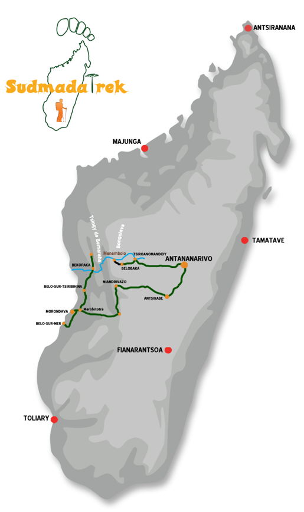

Le trek hors du temps et loin de tout entre Belobaka et Ankavandra
Le trek hors du temps et loin de tout entre Belobaka et Ankavandra

Conditions
 Le prix indiqué s’entend par personne,
pour un forfait séjour de 17 jours / 16 nuits. Programme non contractuel qui peut être modifié à tout moment.
Le prix indiqué s’entend par personne,
pour un forfait séjour de 17 jours / 16 nuits. Programme non contractuel qui peut être modifié à tout moment.
Prestations incluses
Circuit de 17 jours / 16 nuits, en formule Bed and Breakfast par personne et pension complète durant les bivouacs.
Hébergement sur la base d’une chambre double ou twin, matériel de camping (tente et matelas), porteurs, Les transferts aéroports / hôtels / aéroports.
Les visites et excursions mentionnées au programme, en voiture privé avec la présence d’un guide Local parlant français, porteurs durant le trek, pirogue et piroguiers.
Prestations non incluses
Le supplément chambre individuelle (210 €).
Sacs de couchage, Toutes les boissons.
Les extra et autres dépenses que celles proposées par la formule.
Les frais personnels Les pourboires.
Les assurances annulation, assistance et rapatriement